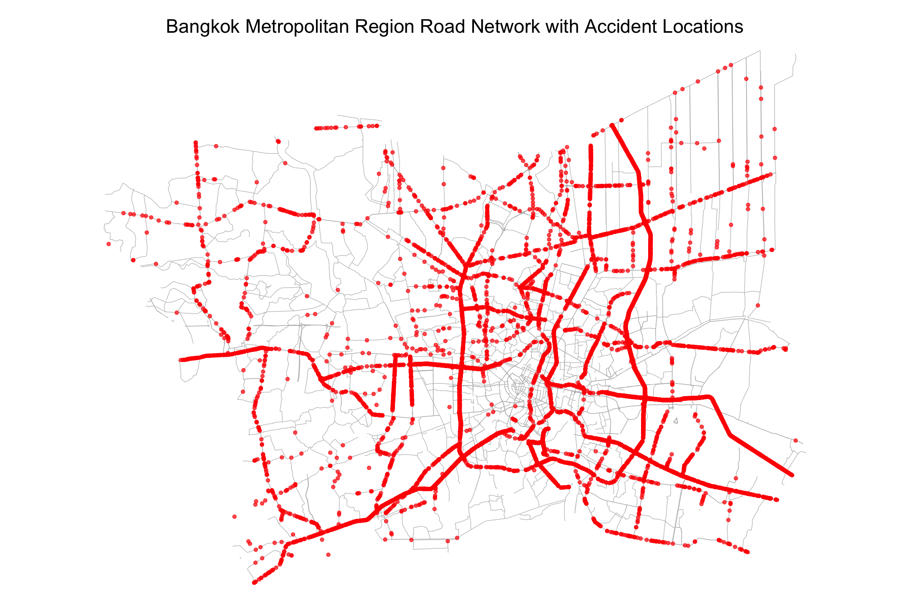

pacman::p_load(sf, spNetwork, spatstat, raster, tmap, tidyverse, classInt, gifski)Take-home Exercise 1: Geospatial Analytics for Social Good
1 Overview
Road traffic accidents are a global concern, causing around 1.19 million deaths and leaving millions injured annually. These accidents disproportionately affect vulnerable road users, including pedestrians, cyclists, and motorcyclists. Low- and middle-income countries, which hold 60% of the world’s vehicles, account for 90% of fatalities. Beyond human suffering, road accidents also pose a significant economic burden, costing nations 3% of their GDP.
Thailand, with one of the highest road fatality rates in Southeast Asia, reports approximately 20,000 deaths annually, or 56 deaths each day. Between 2014 and 2021, the frequency of road accidents increased, particularly on national highways. Accident-prone areas, often referred to as “black spots,” are primarily found on straight roads (66%), curves (13%), intersections, bridges, and slopes.
This analysis will focus on the Bangkok Metropolitan Region (BMR), exploring the causes and patterns of road accidents using geospatial analytics. The study will consider both behavioral and environmental factors, and integrate temporal aspects, such as time of day, day of the week, and season, to provide a comprehensive understanding of road traffic accidents in the BMR.
2 Getting Started
2.1 The Packages
In this exercise, we will use following packages:
| Package | Description |
|---|---|
| sf | Provides functions to manage, processing, and manipulate Simple Features, a formal geospatial data standard that specifies a storage and access model of spatial geometries such as points, lines, and polygons. |
| spNetwork | Provides functions to perform Spatial Point Patterns Analysis such as kernel density estimation (KDE) and K-function on network. It also can be used to build spatial matrices (‘listw’ objects like in ‘spdep’ package) to conduct any kind of traditional spatial analysis with spatial weights based on reticular distances. |
| spatstat | Provides functions for spatial statistics with a strong focus on analysing spatial point patterns. |
| raster | Provides functions which reads, writes, manipulates, analyses and model of gridded spatial data (i.e. raster). In this hands-on exercise, it will be used to convert image output generate by spatstat into raster format. |
| tidyverse | Provides collection of functions for performing data science task such as importing, tidying, wrangling data and visualising data. |
| tmap | Provides functions for plotting cartographic quality static point patterns maps or interactive maps by using leaflet API |
| classInt | Provides functions for choosing univariate class intervals for mapping or other graphics purposes. |
| gifski | Provides functions to converts images to GIF animations using pngquant’s efficient cross-frame palettes and temporal dithering with thousands of colors per frame. |
2.2 The Data
| Dataset Name | Description | Format | Source |
|---|---|---|---|
| Thailand Road Accident [2019-2022] | Data on road accidents in Thailand, including accident location and severity | CSV | Kaggle |
| Thailand Roads (OpenStreetMap Export) | A detailed export of road networks in Thailand from OpenStreetMap | ESRI Shapefile | Humanitarian Data Exchange (HDX) |
| Thailand - Subnational Administrative Boundaries | Administrative boundary data for Thailand’s subnational divisions | ESRI Shapefile | Humanitarian Data Exchange (HDX) |
2.3 Data Wrangling
2.3.1 Thailand Road Accident data
We will load Thailand Road Accident data using read_csv() function of readr package.
accidents <- read_csv("data/aspatial/thai_road_accident_2019_2022.csv")Rows: 81735 Columns: 18
── Column specification ────────────────────────────────────────────────────────
Delimiter: ","
chr (10): province_th, province_en, agency, route, vehicle_type, presumed_c...
dbl (6): acc_code, number_of_vehicles_involved, number_of_fatalities, numb...
dttm (2): incident_datetime, report_datetime
ℹ Use `spec()` to retrieve the full column specification for this data.
ℹ Specify the column types or set `show_col_types = FALSE` to quiet this message.glimpse(accidents)Rows: 81,735
Columns: 18
$ acc_code <dbl> 571905, 3790870, 599075, 571924, 599523, 5…
$ incident_datetime <dttm> 2019-01-01 00:00:00, 2019-01-01 00:03:00,…
$ report_datetime <dttm> 2019-01-02 06:11:00, 2020-02-20 13:48:00,…
$ province_th <chr> "ลพบุรี", "อุบลราชธานี", "ประจวบคีรีขันธ์", "เชียงใ…
$ province_en <chr> "Loburi", "Ubon Ratchathani", "Prachuap Kh…
$ agency <chr> "department of rural roads", "department o…
$ route <chr> "แยกทางหลวงหมายเลข 21 (กม.ที่ 31+000) - บ้านวั…
$ vehicle_type <chr> "motorcycle", "private/passenger car", "mo…
$ presumed_cause <chr> "driving under the influence of alcohol", …
$ accident_type <chr> "other", "rollover/fallen on straight road…
$ number_of_vehicles_involved <dbl> 1, 1, 2, 1, 1, 1, 2, 2, 2, 2, 1, 1, 1, 1, …
$ number_of_fatalities <dbl> 0, 0, 1, 0, 0, 0, 0, 1, 3, 0, 0, 1, 0, 0, …
$ number_of_injuries <dbl> 2, 2, 0, 1, 0, 2, 2, 0, 0, 1, 1, 0, 1, 1, …
$ weather_condition <chr> "clear", "clear", "clear", "clear", "clear…
$ latitude <dbl> 14.959105, 15.210738, 12.374259, 18.601721…
$ longitude <dbl> 100.87346, 104.86269, 99.90795, 98.80420, …
$ road_description <chr> "straight road", "straight road", "wide cu…
$ slope_description <chr> "no slope", "no slope", "slope area", "no …The dataset consists of 81,735 rows and 18 columns. Below is a detailed description of each column, as provided on Kaggle:
| Column | Description |
|---|---|
| acc_code | The accident code or identifier. |
| incident_datetime | The date and time of the accident occurrence. |
| report_datetime | The date and time when the accident was reported. |
| province_th | The name of the province in Thailand, written in Thai. |
| province_en | The name of the province in Thailand, written in English. |
| agency | The government agency responsible for the road and traffic management. |
| route | The route or road segment where the accident occurred. |
| vehicle_type | The type of vehicle involved in the accident. |
| presumed_cause | The presumed cause or reason for the accident. |
| accident_type | The type or nature of the accident. |
| number_of_vehicles_involved | The number of vehicles involved in the accident. |
| number_of_fatalities | The number of fatalities resulting from the accident. |
| number_of_injuries | The number of injuries resulting from the accident. |
| weather_condition | The weather condition at the time of the accident. |
| latitude | The latitude coordinate of the accident location. |
| longitude | The longitude coordinate of the accident location. |
| road_description | The description of the road type or configuration where the accident occurred. |
| slope_description | The description of the slope condition at the accident location. |
colSums(is.na(accidents)) acc_code incident_datetime
0 0
report_datetime province_th
0 0
province_en agency
0 0
route vehicle_type
0 0
presumed_cause accident_type
0 0
number_of_vehicles_involved number_of_fatalities
0 0
number_of_injuries weather_condition
0 0
latitude longitude
359 359
road_description slope_description
0 0 bmr_provinces <- c("Bangkok", "Nonthaburi", "Nakhon Pathom", "Pathum Thani", "Samut Prakan", "Samut Sakhon")
accidents_bmr <- accidents %>%
filter(!is.na(longitude) & longitude != "",
!is.na(latitude) & latitude != "") %>%
select(-c(province_th, route, report_datetime, agency)) %>%
filter(province_en %in% bmr_provinces) %>%
mutate(
Year = year(incident_datetime),
Month_num = month(incident_datetime),
Month_lab = month(incident_datetime, label = TRUE),
Day_of_Week_num = wday(incident_datetime),
Day_of_Week_lab = wday(incident_datetime, label = TRUE),
Day_of_year = yday(incident_datetime),
Hour = hour(incident_datetime)
) %>%
st_as_sf(coords = c("longitude", "latitude"), crs=4326) %>%
st_transform(crs = 32647)Using the extracted time data, we will classify each incident by season, identify whether it occurred during rush hours, determine if it took place on a weekday or weekend, and check if it coincided with Thailand’s major festival, Songkran.
accidents_bmr <- accidents_bmr %>%
mutate(
season = case_when(
Month_num %in% c(3, 4, 5) ~ "summer",
Month_num %in% c(6, 7, 8, 9, 10) ~ "rainy",
Month_num %in% c(11, 12, 1, 2) ~ "winter"
),
is_songkran = case_when(
Year == 2019 & Month_num == 4 & day(incident_datetime) %in% c(12:16) ~ TRUE, # Songkran in 2019 (12-16 April)
Year != 2019 & Month_num == 4 & day(incident_datetime) %in% c(13:15) ~ TRUE, # Songkran in other years (13-15 April)
TRUE ~ FALSE
),
rush_hour = case_when(
wday(incident_datetime) %in% c(2:6) & hour(incident_datetime) %in% c(7:9) ~ TRUE, # 7-9 AM on weekdays
wday(incident_datetime) %in% c(2:6) & hour(incident_datetime) %in% c(16:19) ~ TRUE, # 4-7 PM on weekdays
TRUE ~ FALSE
),
weekday_or_weekend = case_when(
wday(incident_datetime) %in% c(2:6) ~ "weekday", # Monday to Friday
TRUE ~ "weekend" # Saturday and Sunday
)
)We will simplify the presumed_clause column, as it currently contains 40 categories, making it too complex for effective analysis.
# Define the categories
driver_behavior <- c("speeding", "running red lights/traffic signals", "tailgating",
"illegal overtaking", "failure to yield/signal", "abrupt lane change",
"driving in the wrong lane", "failure to signal enter/exit parking",
"failure to yield right of way", "ignoring stop sign while leaving intersection",
"reversing vehicle", "straddling lanes", "using mobile phone while driving",
"using psychoactive substances", "loss of control",
"driving under the influence of alcohol", "falling asleep", "medical condition")
road_environmental <- c("dangerous curve", "slippery road", "road in poor condition",
"inadequate visibility", "obstruction in sight", "no traffic signs",
"no road divider lines", "repair/construction on the road",
"debris/obstruction on the road", "cutting in closely by people/vehicles/animals",
"unfamiliarity with the route/unskilled driving", "sudden stop",
"no presumed cause related to driver")
vehicle_related <- c("vehicle equipment failure", "worn-out/tire blowout",
"disabled vehicle without proper signals/signs", "vehicle electrical system failure",
"brake/anti-lock brake system failure", "overloaded vehicle", "insufficient light")
accidents_bmr$presumed_cause_category <- ifelse(accidents_bmr$presumed_cause %in% driver_behavior, "Driver Behavior",
ifelse(accidents_bmr$presumed_cause %in% road_environmental, "Road/Environmental Conditions",
ifelse(accidents_bmr$presumed_cause %in% vehicle_related, "Vehicle-Related Violations", "Other")))We will also simplify vehicle_type column.
motorcycles_bicycles <- c("motorcycle", "motorized tricycle", "bicycle")
passenger_vehicles <- c("private/passenger car", "passenger pickup truck", "van", "large passenger vehicle")
light_trucks <- c("4-wheel pickup truck")
heavy_trucks <- c("6-wheel truck", "7-10-wheel truck", "large truck with trailer")
non_motorized <- c("pedestrian")
specialized_vehicles <- c("tractor/agricultural vehicle", "other")
accidents_bmr$vehicle_category <- ifelse(accidents_bmr$vehicle_type %in% motorcycles_bicycles,
"2-wheeled",
ifelse(accidents_bmr$vehicle_type %in% passenger_vehicles,
"Passenger Vehicles",
ifelse(accidents_bmr$vehicle_type %in% light_trucks,
"Light Trucks",
ifelse(accidents_bmr$vehicle_type %in% heavy_trucks,
"Heavy Trucks",
ifelse(accidents_bmr$vehicle_type %in% non_motorized,
"Pedestrian",
ifelse(accidents_bmr$vehicle_type %in% specialized_vehicles,
"SpecializedVehicles",
"Unknown"))))))Before saving the dataset in RDS format, let’s check for any duplicated records to ensure data integrity.
any(duplicated(accidents_bmr))[1] FALSENo duplicated records were found, so we can proceed to save the dataset in RDS format.
write_rds(accidents_bmr, "data/rds/road_accident_bmr.rds")accidents_bmr <- read_rds("data/rds/road_accident_bmr.rds")Let’s visualize the accident points in Bangkok Metropolitan Region.
tmap_mode('plot')tmap mode set to plottingtm_shape(accidents_bmr) +
tm_dots(col='red',
alpha=0.4,
size=0.04)2.3.2 Thailand Subnational Administration Boundary
The Thailand subnational administrative boundaries dataset is available at four levels: administrative level 0 (country), level 1 (province), level 2 (district), and level 3 (sub-district or tambon). For this analysis, we will use administrative level 1 (province) and filter the data to focus on the Bangkok Metropolitan Region (BMR).
We will load the province-level boundaries using the st_read() function and filter the dataset to include only the provinces in the BMR. The boundaries will then be transformed into EPSG:32647, which uses meters as units and is based on the UTM Zone 47N projection.
admin_boundary_bmr <- st_read(dsn = "data/geospatial/",
layer = "tha_admbnda_adm1_rtsd_20220121") %>%
filter(ADM1_EN %in% bmr_provinces) %>%
st_transform(crs = 32647)Reading layer `tha_admbnda_adm1_rtsd_20220121' from data source
`/Users/cham/project/Geospatial-Analytics/chrismanafe/ISSS626-GAA/take_home_ex/take_home_ex01/data/geospatial'
using driver `ESRI Shapefile'
Simple feature collection with 77 features and 16 fields
Geometry type: MULTIPOLYGON
Dimension: XY
Bounding box: xmin: 97.34336 ymin: 5.613038 xmax: 105.637 ymax: 20.46507
Geodetic CRS: WGS 84Let’s verify the coordinate reference system of admin_boundary_bmr.
st_crs(admin_boundary_bmr)Coordinate Reference System:
User input: EPSG:32647
wkt:
PROJCRS["WGS 84 / UTM zone 47N",
BASEGEOGCRS["WGS 84",
ENSEMBLE["World Geodetic System 1984 ensemble",
MEMBER["World Geodetic System 1984 (Transit)"],
MEMBER["World Geodetic System 1984 (G730)"],
MEMBER["World Geodetic System 1984 (G873)"],
MEMBER["World Geodetic System 1984 (G1150)"],
MEMBER["World Geodetic System 1984 (G1674)"],
MEMBER["World Geodetic System 1984 (G1762)"],
MEMBER["World Geodetic System 1984 (G2139)"],
ELLIPSOID["WGS 84",6378137,298.257223563,
LENGTHUNIT["metre",1]],
ENSEMBLEACCURACY[2.0]],
PRIMEM["Greenwich",0,
ANGLEUNIT["degree",0.0174532925199433]],
ID["EPSG",4326]],
CONVERSION["UTM zone 47N",
METHOD["Transverse Mercator",
ID["EPSG",9807]],
PARAMETER["Latitude of natural origin",0,
ANGLEUNIT["degree",0.0174532925199433],
ID["EPSG",8801]],
PARAMETER["Longitude of natural origin",99,
ANGLEUNIT["degree",0.0174532925199433],
ID["EPSG",8802]],
PARAMETER["Scale factor at natural origin",0.9996,
SCALEUNIT["unity",1],
ID["EPSG",8805]],
PARAMETER["False easting",500000,
LENGTHUNIT["metre",1],
ID["EPSG",8806]],
PARAMETER["False northing",0,
LENGTHUNIT["metre",1],
ID["EPSG",8807]]],
CS[Cartesian,2],
AXIS["(E)",east,
ORDER[1],
LENGTHUNIT["metre",1]],
AXIS["(N)",north,
ORDER[2],
LENGTHUNIT["metre",1]],
USAGE[
SCOPE["Engineering survey, topographic mapping."],
AREA["Between 96°E and 102°E, northern hemisphere between equator and 84°N, onshore and offshore. China. Indonesia. Laos. Malaysia - West Malaysia. Mongolia. Myanmar (Burma). Russian Federation. Thailand."],
BBOX[0,96,84,102]],
ID["EPSG",32647]]write_rds(admin_boundary_bmr, "data/rds/admin_boundary_bmr.rds")admin_boundary_bmr <- read_rds("data/rds/admin_boundary_bmr.rds")Let’s visualize the administrative boundaries map using tmap.
tmap_mode('plot')tmap mode set to plottingtm_shape(admin_boundary_bmr) +
tm_polygons(col = "ADM1_EN", palette = "Pastel1") +
tm_text("ADM1_EN", size = 0.8) +
tm_layout(main.title = "Bangkok Metropolitan Region (BMR) Administrative Boundaries",
main.title.position = "center",
frame = FALSE)Let’s plot the administrative boundaries along with the accident points from the earlier dataset to visualize their spatial distribution.
tmap_mode('plot')tmap mode set to plottingtm_shape(admin_boundary_bmr) +
tm_polygons(col = "ADM1_EN", palette = "Pastel1") +
tm_shape(accidents_bmr) +
tm_dots(col='red',
alpha=0.4,
size=0.04) +
tm_layout(main.title = "BMR Administrative Boundaries and Road Accidents",
main.title.position = "center",
frame = FALSE)
2.3.3 Thailand Roads
Let us load Thailand Roads data using st_read() of sf package.
roads_sf <- st_read(dsn = "data/geospatial",
layer = "hotosm_tha_roads_lines_shp")We observed that road_sf lacks a CRS. To correct this, we’ll first use st_set_crs() to assign the correct EPSG code, then apply st_transform() to project the data into the appropriate coordinate reference system. This dataset contains geometries in the form of MULTILINESTRING. We will apply st_cast() function to convert it into LINESTRING.
roads_sf <- st_set_crs(roads_sf, 4326) %>%
st_transform(crs = 32647) %>%
st_cast("LINESTRING")Let us verify the CRS on `roads_sf`.
st_crs(roads_sf)
roads_sfhas the correct CRS, EPSG:32647.
Since the OpenStreetMap data includes a wide range of road types, we will filter the dataset to keep only the road classes that are relevant to our analysis. Based on the definition, we’ll select the following road types:
- motorway
- trunk
- primary
- secondary
- tertiary
- motorway_link
- trunk_link
- primary_link
- secondary_link
- tertiary_link.
roads_sf <- roads_sf %>%
filter(highway %in% c("motorway", "trunk", "primary", "secondary", "tertiary",
"motorway_link", "trunk_link", "primary_link",
"secondary_link", "tertiary_link"))unique(roads_sf$highway)The roads_sf dataset contains all road information across Thailand. Since our analysis focuses on the Bangkok Metropolitan Region (BMR), we will filter out roads located outside this area using st_intersection() function from sf package.
roads_bmr <- st_intersection(roads_sf, admin_boundary_bmr) %>%
filter(st_geometry_type(.) == "LINESTRING")Let us check for any invalid geometries from roads_bmr.
invalid_geometries <- st_is_valid(roads_bmr, reason=TRUE)length(which(invalid_geometries != "Valid Geometry"))[1] 0There’s no record with invalid geometries found in roads_bmr.
write_rds(roads_bmr, "data/rds/roads_bmr.rds")Now, let’s visualize the road network along with accident locations within the Bangkok Metropolitan Region (BMR) for a clearer understanding of high-risk areas.
tmap_mode("plot")tmap mode set to plottingtm_shape(roads_bmr) +
tm_lines(col = "gray", lwd = 0.7) +
tm_shape(accidents_bmr) +
tm_dots(col = "red", size = 0.1, alpha = 0.7) +
tm_layout(main.title = "Bangkok Metropolitan Region Road Network with Accident Locations",
main.title.position = "center",
frame = FALSE)
Note
Initial Observations:
- Accidents are highly concentrated along major roads and highways, particularly in central urban areas.
- Peripheral areas show fewer accidents, suggesting lower traffic volumes outside the city center.
- Continuous accident clusters along key corridors indicate potential high-risk areas for traffic incidents.
2.3.4 Converting sf data frame into spatstat’s ppp format
As we plan to carry out spatial point pattern analysis with the spatstat package, we need to convert the spatial data from the sf format into the ppp format.
First, we create ppp objects from accidents_bmr data frame.
accidents_bmr_ppp <- as.ppp(accidents_bmr)Warning in as.ppp.sf(accidents_bmr): only first attribute column is used for
markssummary(accidents_bmr_ppp)Marked planar point pattern: 12986 points
Average intensity 1.218049e-06 points per square unit
Coordinates are given to 10 decimal places
marks are numeric, of type 'double'
Summary:
Min. 1st Qu. Median Mean 3rd Qu. Max.
571882 3788970 3834532 4314457 6092694 7570954
Window: rectangle = [591277.5, 710166.1] x [1486845.7, 1576520.5] units
(118900 x 89670 units)
Window area = 10661300000 square unitsThen we create owin objects from admin_boundary_bmr data frame.
admin_boundary_bmr_owin <- as.owin(admin_boundary_bmr)Now, we can create a ppp object by combining accidents_bmr_ppp and admin_boundary_bmr_owin.
accidents_bmr_ppp = accidents_bmr_ppp[admin_boundary_bmr_owin]
plot(accidents_bmr_ppp)Let us re-scale the unit of measurement from metre to kilometre before performing KDE.
accidents_bmr_ppp.km <- rescale.ppp(accidents_bmr_ppp,
1000,
"km")3 Exploratory Data Analysis
Before conducting the Spatial Point Pattern Analysis, we will first perform Exploratory Data Analysis (EDA) to better understand the underlying patterns and distributions in the data.
ggplot(accidents_bmr, aes(x = presumed_cause_category)) +
geom_bar(fill = "skyblue", color = "black") +
labs(title = "Accidents Distribution by Cause Categories",
x = "Road Accident Cause Categories",
y = "Number of Accidents") +
geom_text(stat='count', aes(label=..count..), vjust=-0.5) +
theme_minimal()Warning: The dot-dot notation (`..count..`) was deprecated in ggplot2 3.4.0.
ℹ Please use `after_stat(count)` instead.ggplot(accidents_bmr, aes(x=vehicle_category)) +
geom_bar(fill = "skyblue", color = "black") +
labs(title = "Accidents Distribution by Vehicle Categories",
x = "Vehicle Categories",
y = "# of Accidents") +
geom_text(stat='count', aes(label=..count..), vjust=-0.5) +
theme_minimal()ggplot(accidents_bmr, aes(x=season)) +
geom_bar(fill = "skyblue", color = "black") +
labs(title = "Accidents Distribution by Season",
x = "Season",
y = "# of Accidents") +
geom_text(stat='count', aes(label=..count..), vjust=-0.5) +
theme_minimal()ggplot(accidents_bmr, aes(x=weather_condition)) +
geom_bar(fill = "skyblue", color = "black") +
labs(title = "Accidents Distribution by Weather",
x = "Weather",
y = "# of Accidents") +
geom_text(stat='count', aes(label=..count..), vjust=-0.5) +
theme_minimal()ggplot(accidents_bmr, aes(x=Month_lab, fill = season)) +
geom_bar() +
labs(title = "Accident Distribution by Month",
x = "Month",
y = "# of Accidents") +
geom_text(stat='count', aes(label=..count..), vjust=-0.5) +
theme_minimal() +
scale_fill_manual(values = c("rainy" = "blue", "summer" = "orange", "winter" = "lightblue"))ggplot(accidents_bmr, aes(x=Day_of_Week_lab, fill = weekday_or_weekend)) +
geom_bar() +
labs(title = "Accident Distribution by Day of the week",
x = " Day of the week",
y = "# of Accidents") +
geom_text(stat='count', aes(label=..count..), vjust=-0.5) +
theme_minimal() +
scale_fill_manual(values = c("weekday" = "lightblue", "weekend" = "#e34a33"))ggplot(accidents_bmr, aes(x=Hour)) +
geom_bar(fill = "skyblue", color = "black") +
labs(title = "Accident Distribution by Hour of the Day",
x = "Hour of the Day",
y = "# of Accidents") +
geom_text(stat='count', aes(label=..count..), vjust=-0.5) +
theme_minimal()
ggplot(accidents_bmr, aes(x = is_songkran)) +
geom_bar(fill = "skyblue", color = "black") +
labs(title = "Accident Frequency During Songkran Festival",
x = "Songkran",
y = "# of Accidents") +
geom_text(stat='count', aes(label=..count..), vjust=-0.5) +
theme_minimal()
Observation
The following observations summarize key trends and patterns identified from the exploratory data analysis of road accidents in the Bangkok Metropolitan Region (BMR):
Driver Behavior: The majority of accidents in the BMR are caused by driver behavior.
Vehicle Involvement: Trucks, both light and heavy, are the most frequently involved vehicle category in accidents.
Seasonal Trends: While accidents are more common in the rainy season than in winter or summer, the difference is not significant.
Weather Conditions: A large proportion of accidents occur in clear weather, with only a small portion happening during rainy conditions.
Day of the Week: Accidents are slightly more frequent on Fridays and Saturdays compared to other days.
Hour of Day:
Two Accident Peaks: There are two main peaks in accidents—one around 10 AM and another around 5 PM, likely corresponding to the morning and evening rush hours.
High Accident Frequency During Daytime: Accidents remain consistently high between 10 AM and 2 PM, indicating sustained traffic activity during the business hours.
Low Accident Rates Late at Night: Accident counts drop significantly between 2 AM and 6 AM, reflecting reduced traffic during late-night hours.
Monthly Trends: Accident frequency remains fairly consistent across months, with no major variations.
Songkran: A negligible number of accidents occur during the Songkran festival.
4 Spatial Point Pattern Analysis
4.1 First-order spatial point pattern analysis
4.1.1 Computing kernel density estimation using automatic bandwidth selection method
We will compute the kernel density estimate (KDE) using different automatic bandwidth selection methods. Specifically, we will use bw.diggle and bw.ppl for the analysis to compare their results.
kde_accidents_bmr_bw_diggle <- density(accidents_bmr_ppp.km,
sigma=bw.diggle,
edge=TRUE,
kernel="gaussian")
kde_accidents_bmr_bw_ppl <- density(accidents_bmr_ppp.km,
sigma=bw.ppl,
edge=TRUE,
kernel="gaussian")
par(mfrow=c(1,2))
plot(kde_accidents_bmr_bw_diggle, main = "bw.diggle")
plot(kde_accidents_bmr_bw_ppl, main = "bw.ppl")
Observation
Both
bw.diggleandbw.pplmethods produce similar overall density patterns, with high-density areas highlighted in yellow and low-density areas in blue.High-density zones appear to cluster along key road networks or points of interest in both estimates, indicating consistency between the two methods.
4.1.2 Computing kernel density estimation using adaptive bandwidth
Given the varying densities in our data and the consistent results from automatic bandwidth methods such as bw.diggle and bw.ppl, we will try to compute the density by using adaptive.density() of spatstat package. Adaptive bandwidth methods are often better suited to capture both global trends and local variations, providing a more accurate and nuanced understanding of the spatial patterns without the risk of oversmoothing or undersmoothing.
kde_accidents_adaptive_kernel <- adaptive.density(accidents_bmr_ppp.km, method="kernel")
par(mfrow=c(1,2))
plot(kde_accidents_bmr_bw_diggle, main = "automatic - bw.diggle")
plot(kde_accidents_adaptive_kernel, main = "adaptive - kernel")Visually, these results are very similar because both bw.diggle and the adaptive kernel method adjust the bandwidth based on the local density of points in the dataset. Since both methods are adaptive in nature, they capture the same underlying spatial patterns and point densities, leading to similar visual outcomes. This consistency indicates that the spatial distribution of accidents is being accurately reflected by both approaches.
4.1.3 Plotting KDE Maps
We will visualise KDE (Kernel Density Estimate) map with a color palette ranging from yellow to red to represent density. It includes BMR boundary polygons, a scale bar, and sets the map projection to the UTM Zone 47N (EPSG:32647).
code chunk
raster_kde_adaptive <- raster(kde_accidents_adaptive_kernel)
projection(raster_kde_adaptive) <- CRS("+init=EPSG:32647 +units=km")
tmap_mode('plot')tmap mode set to plottingcode chunk
kde_diggle_tmap <- tm_basemap(server = "OpenStreetMap") +
tm_shape(admin_boundary_bmr, ) +
tm_polygons(alpha=0.1, id="ADM1_EN") +
tm_shape(raster_kde_adaptive) +
tm_raster("layer",
n = 7,
title = "KDE Adaptive",
style = "pretty",
alpha = 0.6,
palette = "YlOrRd") +
tm_layout(main.title = "KDE of Road Accidents in Bangkok Metropolitan Region",
main.title.position = "center",
frame = FALSE)
kde_diggle_tmap
Observation
The map reveals that accidents are most concentrated in Bangkok, followed by Samut Prakan and Pathum Thani provinces.
The highest concentration of accidents occurs along Motorway Route 7 (Bangkok–Ban Chang Motorway), with significant densities also observed on other major highways, including Motorway Route 9 (Kanchanaphisek Road, also known as the Bangkok Outer Ring Road) and Highway 338 (Borommaratchachonnani Road).
The concentration of accidents along these highways indicates that targeted safety interventions, such as traffic management, road safety improvements, or enhanced enforcement in these regions, may be effective in reducing accident rates.
4.1.4 Nearest neighbour analysis
In this section, we will perform the Clark-Evans test of aggregation for a spatial point pattern using the clarkevans.test() function from the spatstat package.
The test hypotheses are:
- H₀: The spatial distribution of road accidents in BMR are randomly distributed.
- H₁: The spatial distribution of road accidents in BMR are not randomly distributed.
We will use a 95% confidence interval.
clarkevans.test(accidents_bmr_ppp,
correction="none",
clipregion="admin_boundary_bmr_owin",
alternative=c("clustered"),
nsim=99)
Clark-Evans test
No edge correction
Z-test
data: accidents_bmr_ppp
R = 0.19109, p-value < 2.2e-16
alternative hypothesis: clustered (R < 1)Interpretations:
The Clark-Evans test result (R = 0.19109, p-value < 2.2e-16) suggests that road accidents in the dataset are not randomly distributed. Instead, they exhibit significant clustering, meaning accidents tend to occur in close proximity to each other rather than being spread out randomly across the region.
This clustering is likely tied to underlying factors such as high traffic volumes or specific road types (e.g., intersections, highways).
4.2 Network Constrained Spatial Point Pattern Analysis
In this section, we aim to analyze the spatial distribution of road accidents within the Bangkok Metropolitan Region (BMR) using Network Kernel Density Estimation (NKDE). Unlike traditional spatial point pattern analysis, NKDE considers the road network as a constraint, ensuring that density estimates are calculated along the network itself, rather than across a continuous surface. This method is particularly well-suited for transportation-related incidents, where events (such as accidents) are tied to specific roads.
4.2.1 Preparing the lixels objects
To begin, the road network will be prepared by segmenting the road lines into smaller units, known as lixels (linear pixels), using the lixelize_lines() function of spNetwork package. Choosing the appropriate lixel length and minimum distance is crucial. Shorter lixels offer finer spatial resolution but may increase computational cost, while longer lixels capture broader patterns.
We can determine the optimal lixel length by analyzing the distribution of road segment length.
summary(st_length(roads_bmr)) Min. 1st Qu. Median Mean 3rd Qu. Max.
0.016 33.862 117.396 359.803 378.717 21708.848 quantile(st_length(roads_bmr), probs = seq(.1, .9, by = .1))Units: [m]
10% 20% 30% 40% 50% 60% 70% 80%
15.30428 26.52962 43.49558 71.57635 117.39646 189.01541 301.66260 478.58565
90%
899.27046 Surprisingly, road lengths in the BMR vary significantly, with half of the roads being up to 118 meters long. However, since we know previously that the accidents concentrated on highway, we’ll set the length of lixel to 5,000 meters and minimum distance to 2,500 meters.
lixels <- lixelize_lines(lines = roads_bmr,
lx_length = 5000,
mindist = 2500)4.2.2 Generating line centre points
Next, the lines_center() function from the spNetwork package will be used to generate a SpatialPointsDataFrame(i.e., samples) by extracting the center points of each line segment. The following code chunk demonstrates this process.
samples <- lines_center(lixels)4.2.3 Bandwidth selection
Before computing NKDE, it is essential to define the appropriate bandwidth, as described in the NKDE documentation. According to the documentation, bandwidth is the most critical parameter when performing kernel density estimation, as it controls the smoothing of the density estimation. In this analysis, we will use the bw_cv_likelihood_calc() function, which applies likelihood cross-validation through a leave-one-out approach. The idea is to find a bandwidth that produces the most accurate results by minimizing the difference when an event is removed from the dataset.
bws_selection_cv <- bw_cv_likelihood_calc(
bws = seq(200,3000,100),
lines = mtl_network, events = bike_accidents,
w = rep(1,nrow(bike_accidents)),
kernel_name = "quartic", method = "continuous",
diggle_correction = FALSE, study_area = NULL,
max_depth = 8,
digits=2, tol=1, agg=50,
sparse=TRUE, grid_shape=c(10,10),
verbose=FALSE, check=TRUE)
write_rds(bws_selection_cv, "data/rds/bws_selection_cv.rds")cv_values <- data.frame(
"bw" = bws_selection_cv$bw,
"cv_likelihood_adpt_cont" = bws_selection_cv$cv_scores
)
cv_values bw cv_likelihood_adpt_cont
1 200 -99.98859
2 300 -44.39478
3 400 -24.62782
4 500 -16.85588
5 600 -15.03705
6 700 -15.17730
7 800 -15.31530
8 900 -15.45111
9 1000 -15.58165
10 1100 -15.70630
11 1200 -15.82792
12 1300 -17.93564
13 1400 -18.04830
14 1500 -18.15752
15 1600 -18.26293
16 1700 -16.38082
17 1800 -16.47389
18 1900 -16.56562
19 2000 -16.65462
20 2100 -16.74066
21 2200 -16.82379
22 2300 -16.90409
23 2400 -16.98168
24 2500 -17.05668
25 2600 -17.12923
26 2700 -17.19946
27 2800 -17.26749
28 2900 -17.33346
29 3000 -17.39746
Although the bandwidth range of 600-800 yields the lowest cross-validation likelihood scores, we have chosen a bandwidth of 1700 to produce smoother results.
This larger bandwidth captures broader trends across the road network, offering a more generalized view of accident density.
It is appropriate for our focus on overall patterns over BMR region rather than detailed, localized hotspots.
4.2.4 Performing NKDE
We are now ready to compute the Network Kernel Density Estimation (NKDE) using the bandwidth that we selected, as demonstrated in the code chunk below.
densities <- nkde(roads_bmr,
events = accidents_bmr,
w = rep(1, nrow(accidents_bmr)),
samples = samples,
kernel_name = "quartic",
bw = 1700,
div= "bw",
method = "simple",
digits = 1,
tol = 1,
grid_shape = c(10,10),
max_depth = 8,
agg = 50,
sparse = TRUE,
verbose = FALSE)
write_rds(densities, "data/rds/densities_1700.rds")We can rescale the density values from number of accidents per meter to number of accidents per kilometer using the following code:
densities = read_rds("data/rds/densities_1700.rds")
lixels$density <- densities*1000
lixels$density_lwd <- densities*1000*104.2.5 Visualise using tmap package
Next, we will use the tmap package to visualize the Network Kernel Density Estimation (NKDE) results. To enhance the visibility of accident hotspots, we will represent network density through line widths. The line widths will be adjusted using the density_lwd column, which is calculated by multiplying the density by 10 to make the hotspots stand out more clearly on the map.
tmap_mode('plot')tmap mode set to plottingtm_shape(admin_boundary_bmr) +
tm_polygons(col = "white", border.col = "black", alpha = 0.5) +
tm_shape(lixels) +
tm_lines(col = "density",
palette = "YlOrRd",
lwd = "density_lwd",
title.col = "Accident Density",
legend.lwd.show = F) +
tm_layout(main.title = "Network KDE of Road Accidents in the Bangkok Metropolitan Region",
main.title.position = "center",
frame = FALSE)
Note
- Road segments with a higher density of accidents are highlighted in darker colors, while those with lower density are shown in lighter colors.
- As expected, the concentration is mostly along highways, consistent with the earlier KDE map.
- However, this interactive map allows us to identify specific road segments with particularly high accident concentrations in greater detail.
- For example, we can see the hot-spot on this part of the highway intersection on Bangkok−Ban Chang Motorway, located less than 11 km from Suvarnabhumi Airport.
5 Spatio-Temporal Network Constrained Point Pattern Analysis
In this section, we aim to analyze the spatio-temporal distribution of road accidents using Temporal Network Kernel Density Estimation (TNKDE). By incorporating both spatial and temporal dimensions, this analysis allows us to investigate how accident hotspots evolve over time across the road network.
5.1 Spatio-Temporal bandwidth selection
We will calculate the kernel density values over time using several different bandwidths to explore how varying the bandwidth affects the temporal distribution of accidents. To find the optimal bandwidth, we will use bw_tnkde_cv_likelihood_calc() function which employs cross-validation likelihood over lines length and time window.
cv_scores <- bw_tnkde_cv_likelihood_calc(
bws_net = seq(100,3000,100),
bws_time = seq(10,90,10),
lines = roads_bmr,
events = accidents_bmr,
time_field = "Day_of_year",
w = rep(1, nrow(accidents_bmr)),
kernel_name = "quartic",
method = "discontinuous",
diggle_correction = FALSE,
study_area = NULL,
max_depth = 10,
digits = 2,
tol = 1,
agg = 50,
sparse=TRUE,
grid_shape=c(10,10),
sub_sample=1,
verbose = FALSE,
check = TRUE)
write_rds(cv_scores, 'data/rds/cv_scores.rds')knitr::kable(cv_scores)| 10 | 20 | 30 | 40 | 50 | 60 | 70 | 80 | 90 | |
|---|---|---|---|---|---|---|---|---|---|
| 100 | -503.1470 | -411.56024 | -359.13252 | -319.70043 | -296.28244 | -273.46883 | -256.57819 | -245.45838 | -233.50709 |
| 200 | -451.8656 | -349.25712 | -297.12981 | -259.80706 | -238.57315 | -219.25308 | -204.94545 | -193.87420 | -184.33171 |
| 300 | -411.7409 | -308.21627 | -258.28398 | -224.93362 | -203.85115 | -186.89160 | -174.35886 | -164.05281 | -156.10756 |
| 400 | -382.4193 | -281.44792 | -233.43310 | -201.49690 | -180.97676 | -165.88205 | -154.89507 | -145.70645 | -138.14710 |
| 500 | -356.7807 | -259.70366 | -212.53396 | -182.31666 | -162.97646 | -149.53098 | -138.56529 | -130.38578 | -123.41433 |
| 600 | -333.7798 | -241.27209 | -196.56845 | -168.32959 | -151.46738 | -138.62101 | -128.08409 | -120.07269 | -113.31804 |
| 700 | -315.4986 | -225.84796 | -183.22485 | -155.80094 | -140.01447 | -128.17854 | -118.59510 | -111.11699 | -104.47427 |
| 800 | -300.3759 | -214.05495 | -172.46246 | -145.79880 | -131.01733 | -119.61561 | -110.45929 | -103.87991 | -97.66436 |
| 900 | -286.0675 | -201.01334 | -160.71178 | -135.42729 | -121.65593 | -110.78660 | -102.42547 | -96.63766 | -91.21185 |
| 1000 | -275.2791 | -192.21778 | -153.09315 | -128.56451 | -115.49001 | -105.14884 | -96.84836 | -90.70122 | -85.74936 |
| 1100 | -263.8679 | -183.16971 | -145.58847 | -122.27583 | -110.15384 | -100.23870 | -92.26160 | -85.96417 | -81.22520 |
| 1200 | -253.0554 | -174.49833 | -138.35342 | -116.62406 | -104.25656 | -95.28539 | -87.46922 | -81.02047 | -76.44000 |
| 1300 | -242.5470 | -165.76288 | -131.89500 | -109.97811 | -97.61630 | -88.55010 | -81.10195 | -74.70785 | -70.33985 |
| 1400 | -234.2463 | -158.49539 | -125.17606 | -104.15641 | -92.58619 | -84.05052 | -76.92149 | -70.84351 | -66.84340 |
| 1500 | -225.2628 | -151.64531 | -118.92226 | -99.37900 | -88.60009 | -80.53976 | -73.83456 | -68.33277 | -64.38924 |
| 1600 | -217.2265 | -145.42937 | -113.19715 | -94.39875 | -84.15044 | -76.25414 | -70.12543 | -64.78711 | -61.26364 |
| 1700 | -209.5104 | -139.57852 | -108.30288 | -90.55891 | -80.57820 | -72.68777 | -66.98060 | -62.01027 | -58.59556 |
| 1800 | -202.8955 | -134.14565 | -103.82617 | -87.14138 | -77.37781 | -69.69971 | -64.25748 | -59.60120 | -56.76175 |
| 1900 | -197.8099 | -130.39546 | -100.60941 | -84.19633 | -74.33447 | -66.86946 | -61.89645 | -57.14168 | -54.35724 |
| 2000 | -191.2115 | -126.22755 | -97.75892 | -81.35705 | -72.22746 | -64.50579 | -59.95342 | -55.46089 | -52.62840 |
| 2100 | -183.8220 | -121.17288 | -93.60826 | -78.67117 | -70.17067 | -62.35075 | -57.95792 | -53.93573 | -51.20826 |
| 2200 | -178.2100 | -117.52620 | -90.70301 | -76.29805 | -68.06560 | -60.71304 | -56.27251 | -52.56467 | -49.89440 |
| 2300 | -173.2338 | -113.78064 | -87.59311 | -73.56317 | -65.85420 | -59.18160 | -55.05630 | -51.40431 | -49.09845 |
| 2400 | -167.6774 | -109.35022 | -84.48444 | -70.92985 | -63.74787 | -57.44583 | -53.58383 | -50.13942 | -47.78359 |
| 2500 | -163.6985 | -105.81237 | -82.10487 | -68.97492 | -61.79712 | -55.70652 | -51.74596 | -48.51130 | -46.62338 |
| 2600 | -157.9985 | -102.11856 | -79.56787 | -67.06982 | -59.89830 | -54.07061 | -50.57911 | -47.45140 | -45.61844 |
| 2700 | -153.5967 | -99.77410 | -77.76029 | -65.63215 | -58.72508 | -53.10908 | -49.77726 | -46.60018 | -44.76963 |
| 2800 | -149.5649 | -97.33060 | -76.26542 | -64.24820 | -57.86415 | -52.45969 | -49.13222 | -46.00723 | -44.28095 |
| 2900 | -146.3715 | -94.31745 | -73.99179 | -62.55229 | -56.22724 | -50.87926 | -47.86623 | -44.89889 | -43.38140 |
| 3000 | -142.2466 | -92.50544 | -72.44896 | -61.27443 | -55.16108 | -50.12642 | -47.27126 | -44.66811 | -43.25534 |
We have obtained the cross-validation results for the bandwidth options in our spatio-temporal analysis.
Using the “leave one out cross-validation” method, the optimal bandwidths are 3000 meters for space and 90 days for time.
5.2 Compute Temporal Network Kernel Density Estimate (TNKDE)
Now, we will compute the Temporal Network Kernel Density Estimation (TNKDE) using the tnkde() function of spNetwork package with the selected bandwidth.
sample_time <- seq(0, max(accidents_bmr$Day_of_year), 90)
# calculating densities
tnkde_densities_adapt <- tnkde(lines = roads_bmr,
events = accidents_bmr,
time_field = "Day_of_year",
w = rep(1, nrow(accidents_bmr)),
samples_loc = samples,
samples_time = sample_time,
kernel_name = "quartic",
bw_net = 3000,
bw_time = 90,
adaptive = T,
trim_bw_net = 3100,
trim_bw_time = 100,
method = "discontinuous",
div = "bw",
max_depth = 10,
digits = 2,
tol = 1,
agg = 50,
grid_shape = c(10,10),
verbose = FALSE)
write_rds(tnkde_densities_adapt, "data/rds/tnkde_densities_adapt.rds")
Reflection
This code chunk is adapted from spNetwork documentations example on tnkde(). Below is a breakdown of key arguments used in this code:
bw_net = 3000, bw_time = 90: These parameters define the bandwidths for the network and time dimensions, set to3000meters and90days, respectively. These values were selected based on the results of the “leave one out cross-validation” discussed in the previous section.trim_bw_net = 3100, trim_bw_time = 100: These parameters set the maximum values for the adaptive bandwidth in the network and time dimensions. In this case, we used simple rule-of-thumb values for3100meters and100days.
5.3 Visualize TNKDE map
Upon completing the TNKDE density calculations, we will visualize the results as an animated GIF.
First, we will use the classInt package to create color breaks for the density values. The class intervals will be determined using the k-means algorithm to group the densities into meaningful ranges.
all_densities <- c(tnkde_densities_adapt$k)
color_breaks <- classIntervals(all_densities, n = 10, style = "kmeans")Next, we will generate individual maps for each sample time and compile them into all_maps using the lapply() function. Each map will visualize the TNKDE densities for a specific time point, with dots representing the density values. The colors of the dots will correspond to the density values, using the color breaks and palette defined earlier.
We will create an animated GIF from the series of maps stored in the all_maps object using the tmap_animation() function from the tmap package. After generating the GIF, we will display it using the include_graphics() function from the knitr package.
all_maps <- lapply(1:ncol(tnkde_densities_adapt$k), function(i){
time <- sample_time[[i]]
samples$density <- tnkde_densities_adapt$k[,i]
map1 <- tm_shape(samples) +
tm_dots(col = "density", size = 0.01,
breaks = color_breaks$brks,
palette = "YlOrRd",) +
tm_layout(legend.show=FALSE, main.title = as.character(time), main.title.size = 0.5)
return(map1)
})
# creating a gif with all the maps
tmap_animation(all_maps, filename = "images/animated_map2.gif",
width = 1000, height = 1000, dpi = 300, delay = 50)knitr::include_graphics("images/animated_map2.gif")
Note
From the animated GIF, we can observe that while there are some minor temporal shifts in accident density across certain areas of the BMR, the primary hotspots remain largely unchanged.
These consistent hotspots, as identified in the KDE analysis, suggest that certain locations consistently experience high accident rates over time.
Although there is some density movement in less concentrated areas, the major hotspots appear to be long-standing, emphasizing the need for focused road safety measures in these critical zones.
6 Conclusions
6.1 Key findings
Consistent Accident Hotspots
The Network Kernel Density Estimation (NKDE) and Temporal NKDE (TNKDE) analyses identified consistent accident hotspots across the BMR, particularly on major highways in Bangkok and Samut Prakan provinces. These areas show persistent high-density accident zones, suggesting that these locations face ongoing road safety challenges.
Minimal Temporal Shifts
The major hotspots remained largely stable over time, with only minor temporal shifts observed in less concentrated areas. This indicates that the high-risk areas are consistently prone to accidents throughout the year, likely due to factors like traffic congestion or complex road layouts.
Accidents During Clear Weather
Interestingly, most accidents occurred during clear weather conditions, despite the increased accident rates typically associated with the rainy season. This suggests that other factors, such as driver behavior, may have a greater influence on accident occurrence than weather alone.
High-Risk Time Periods
Rush hours (both morning and evening) were identified as periods with a higher distribution of accidents, reflecting the increased traffic volumes during commuting times.
6.2 Limitation
One challenge I encountered was the difficulty in finding appropriate references on spatial point analysis. Some library documentation lacked clarity or contained outdated code, making it harder to fully understand the functions provided by certain packages. Additionally, limited computational resources restricted my ability to perform more extensive bandwidth tests and experiment with adaptive estimation techniques from spNetwork in the analysis.
6.3 Future works
There are several ideas that can be explored for future work on this topic. These improvements could provide more depth to the analysis of road accidents in BMR.
Focusing on High-Risk Provinces
Given that accidents are most concentrated in Bangkok, Samut Prakan, and Pathum Thani, future analysis could prioritize these provinces. A more granular study might help identify specific local risk factors contributing to the high accident rates in these provinces.
Exploring Different Temporal Aspects
So far, my spatio-temporal point analysis has focused on day of the year. Future work could explore density patterns by hour or month to reveal more detailed trends and temporal shifts.
Incorporating Additional Data
Incorporating data like traffic volumes and road maintenance locations could add more depth to the analysis. Since the accidents are mainly concentrated on major highways in the BMR, these factors could help our analysis.
7 References
World Health Organization. (2023). Road traffic injuries. https://www.who.int/news-room/fact-sheets/detail/road-traffic-injuries
World Health Organization. (2017). Road traffic deaths and injuries in Thailand. https://cdn.who.int/media/docs/default-source/thailand/roadsafety/overview-en-final-25-7-19.pdf
Wikipedia. (2024). https://en.wikipedia.org/wiki/Bangkok#Climate
Kam, T. S. (2024). Network Constrained Spatial Point Patterns. https://r4gdsa.netlify.app/chap07.html
Jeremy Gelb. (2024). Temporal Network Kernel Density Estimate. Temporal Network Kernel Density Estimate
Jeremy Gelb. (2024). Network Kernel Density Estimate. Network Kernel Density Estimate